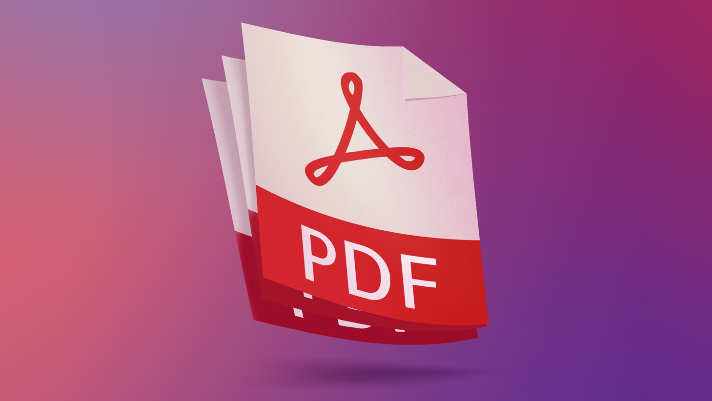

BOAchem: Beauty Of Analytics & Chemistry

El acceso a lenguajes de programación abre las puertas al uso de poderosas herramientas para la gestión documental, estadística avanzada para el análisis de datos y para la toma de desciciones (Data Driven Decisions). Desde la simple construcción de una gráfica o tablero de control especial, hasta incluso la implementación de un modelo predictivo basado en datos actuales e históricos permite la implementación de estratégias de comunicación, gestión de recursos y (BI) Bussines Inteligence.
En el corazón de las más modernas aplicaciones se encuentra la estadística multivariable, la herramienta más poderosa que ha envisionado el ser humano para el análisis de conjuntos de datos complejos. Sus aplicaciones en áreas como química, marketing y negocios son amplias y fundamentales para la toma de decisiones basada en datos, un modelo suficientemente maduro puede llegar a ser indistingible de lo que se conoce como IA (Inteligencia Artificial).
Dividimos las aplicaciones de nuestros servicios de programación en estructurales y aplicaciones matemáticas, ¿que necesitas tú?.
Son aquellas aplicaciones que no requieren el uso de modelos matemáticos para su ejecución, y tratan más de la gestión de los datos, control sobre documentos (hojas de cálculo, PDFs, Word, archivos de texto) y en general cualquier gestión relacionada con la manipulación de documentos para extraer información, organizar, distribuir datos o generar nuevos documentos.
En BOAchem podemos ayudarte por ejemplo a:
•Generar de manera automática documentos en Word, PDF, EXCEL, archivos de texto a partir de bases de datos u otros archivos.

•Extraer información de cientos, miles o millones de documentos para resumir en un archivo nuevo, generar gráficas, o realizar resumenes
•Crear documentos con caracteristicas especiales para cumplir con estandares de control de documentos (permisos de lectura y edición, según usuario)
•Generar de manera automática documentos personalizados de manera masiva, por ejemplo, para generación de certificados, felicitaciones de cumpleaños, para comunicar cambios en la organización u horarios según el trabajador, etc.
•¡Realmente el límite es nuestra imaginación!
Son aquellas aplicaciones que requieren la programación explicita de algoritmos y modelos estadísticos multivariados para su funcionamiento. La lógica matemática programada, sumada a conjuntos de datos de entrenamiento permite la creación de aplicaciones que permiten hacer cosas increibles con la información. En general todo se encamina a la capacidad de crear modelos predictivos con la información disponible.
En BOAchem podemos ayudarte por ejemplo a:
• Clustering: una de las aplicaciones más interezantes de la estadistica multivariable. Permite el análisis discriminatorio para la clasificación de muestras en base a sus características. El clustering es la misma herramienta estadística usada por las grandes compañias de tecnología (Google, Amazon, Facebook, YouTube, Netflix) para realizar sugerencias, entender el comportamiento de los usuarios, realizar busquedas.
•Quimiometría: en control de calidad la quimiometría es la ciencia que permite encontrar correlaciones y valor agregado a conjuntos de información de origen químico-analítico, sin importar la complejidad o heterogeneidad del conjunto de datos, es realmente otra aplicación del "clustering" y en ultimas permite la clasificación cualitativa e incluso análisis semicuantitativo de muestras basados en propiedades faciles de medir. Un buen ejemplo es la clasificación del origen del cafe según su espectro infrarrojo, o la clasificación del origen de las esmeraldas según análisis espectroscópicos, la clasificación del estado de maduración de un aguacate según una fotografía del mismo, etc.
•Segmentación de clientes: en marketing una de las herramientas más importantes que tienen que ser manejadas es la segmentación, los clientes puedes ser segmentados según un sin fin de características de los mismos.
 •¡Realmente el límite es nuestra imaginación!
•¡Realmente el límite es nuestra imaginación!

Excel es una de las herramientas más versátiles que existen para la gestión, análisis y visualización de datos. Podemos ayudarte a sacar provecho de sus funciones, tablas dinámicas, condicionales, programación de formulas y todo lo que necesites hacer con una hoja de cálculo, para que no solo funcione correctamente, tambien para que se vea agradable.
Funciones avanzadas en EXCEL para la gestión de datos solo pueden ser programadas mediante makros en Visual Basic, podemos ayudarte a crear botones con funciones específicas, que impriman un documento, que lo conviertan en PDF, que borre datos de celdas específicas, que cree las pestañas que necesites, que haga automáticamente un cálculo o análisis complejo, que distribuya tareas en base a paramétros establecidos, que genere gráficas, etc.
Python es un lenguaje de programación ampliamente utilizado en ciencia de datos, business intelligence (BI) y resolución de problemas complejos debido a su simplicidad, versatilidad y la gran cantidad de bibliotecas especializadas que ofrece. En ciencia de datos, permite realizar análisis estadísticos, procesamiento de datos masivos y creación de modelos predictivos utilizando herramientas como Pandas, NumPy, Scikit-learn y TensorFlow. En el ámbito de BI, Python facilita la automatización de reportes, la conexión con bases de datos, la integración con herramientas como Power BI o Tableau, y la generación de visualizaciones dinámicas mediante Matplotlib, Seaborn y Plotly, lo que mejora significativamente la toma de decisiones basada en datos. Además, su capacidad para automatizar tareas repetitivas, optimizar procesos y resolver problemas complejos mediante algoritmos y técnicas de machine learning lo convierte en una herramienta clave en entornos empresariales, científicos y tecnológicos.

Las aplicaciones de Python son inumerables. Podemos ayudarte a generar de manera automática reportes, validaciones, estimación de la incertidumbre, todo con los documentos oficiales de tú organización. Podemos generar graficas de manera automática, consolidar información de numerosos archivos y carpetas, incluir firmas en documentos de PDF, etc. Resolver ecuaciones diferenciales, generar gráficas cientificas en varias dimensiones, clasificar archivos en base a su contenido. La imaginación es siempre la única limitante.
BOAchem: Beauty Of Analytics & Chemistry | Juntos en la ciencia.
Bogotá D.C., Colombia | Mosquera Planadas, Colombia
¡Contáctanos!
E-mail: comercial@boachem.com
WhatsApp/Teléfono: (+57) 316 6626 025
Solo WhatsApp: (+57) 320 339 3083